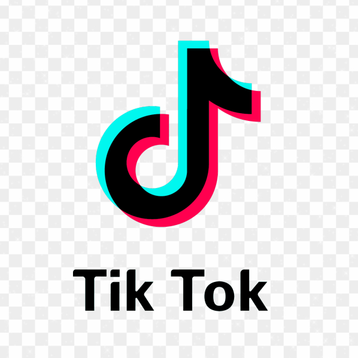

Pueden encontrarnos en instagram como @guatecool_gt

TIK TOK
También estamos en nuestra otra red social como @guatecool__gt
Bienvenido a nuestra empresa guatemalteca revolucionaria, fundada por jóvenes emprendedores con pasión por su país. Una empresa referente en la industria de productos artesanales y sostenibles. Ofrecemos una colección diversa de bolsas de tela y termos, cada uno con un diseño único que refleja la rica cultura guatemalteca. GuateCool inspira a las personas a poder conectar con la cultura y el arte de Guatemala mientras trabajan para mejorar el país y la contaminación.
Somos la mejor experiencia al promover el patrimonio cultural guatemalteco a traves de productos unicos y sostenibles. Donde nos comprometemos a ofrecer bolsas de tela y termos con diseños autenticos guatemaltecos, elaborados con materiales de alta calidad y respetuosos con el medio ambiente.

Ser una empresa referente internacional en la industria de productos artesanales y sostenibles, ofreciendo una coleccion diversa de bolsas de tela y termos con diseño guatemalteco que inspiren a las personas a conectar con la cultura y el arte del pais. Buscamos expandir nuestra presencia en nuevos mercados y colaborar activamente en proyectos que promuevan el desarrollo social y ambiental en Guatemala.
En el corazon de Guatemala, nacio una idea revolucionaria entre un grupo de jovenes emprendedores apasionados por su pais y preocupados por su contaminacion. Inspirados por la rica cultura y el arte guatemalteco, decidieron fundar GuateCool, una empresa con una vision clara: convertirse en un referente internacional en la industrial de productos artesanales y sostenibles. Guatemala se ha ido deteriorando poco a poco y se ha posicionado entre los 5 paises con mas contaminacion en Latinoamerica. Conscientes de los desafios ambientales que enfrentaba su pais, se comprometieron a la mejora del pais y a la reduccion de la contaminacion porque vieron en su empresa una oportunidad para marcar la diferencia. Guiados por su vision, comenzaron a diseñar una coleccion diversa de bolsas de tela y termos, cada uno con un diseño unico que refleja la vibrante cultura guatemalteca. Cada producto no solo era una obra de arte, sino tambien un simbolo de compromiso con la sostenibilidad y el medio ambiente. Con dedicacion y esfuerzo, GuateCOOL pronto gano un reconocimiento local, Su enfoque en la calidad, el diseño y la responsabilidad ambiental atrajo a clientes, quienes no solo apreciaban los productos, sino tambien la historia y la mision detras de la marca. Hoy en dia, GuateCOOL continnua creciendo y expandiendo su impacto positivo. Siguen comprometidos con su vision de inspirar a las personas a conectar con la cultura y el arte de Guatemala mientras trabajan incansablemente para mejorar su pais y reducir la contaminacion.
Nuestro termo es mucho más que un simple recipiente para bebidas. Con una sólida base de acero inoxidable, nuestro termo asegura que tus bebidas se mantengan frías o calientes durante horas, proporcionando comodidad y frescura en cualquier momento del día.
InformacionLa bolsa ha sido diseñada como un viaje por los lugares turisticos más emblematicos de Guatemala, así como por los sellos postales que reflejan la riqueza cultural del país. Esta inspiración cultura se traduce en un diseño impreso en algodón, un material elegido por su durabilidad y comodidad para el cliente. La elección de un unico color, el blanco, confiere a la bolsa una estética simple y versatil, apta para cualquier ocasión.
InformacionNuestro metodo de servicio es por medio de la mepresa c807xpress, ya que es una empresa con buena reputación en ofrecer servicios confiables y eficientes. Nuestro proveedor de entregas nos permitirá garantizar tiempos de entrega rápidos y una mejor gestión logística.
Pueden encontrarnos en instagram como @guatecool_gt
También estamos en nuestra otra red social como @guatecool__gt